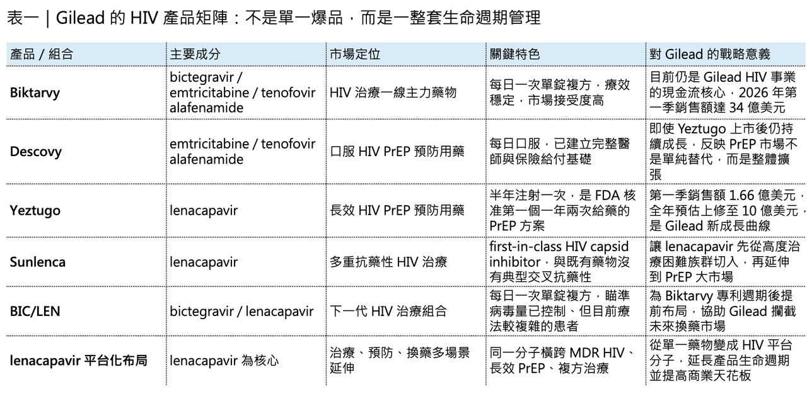
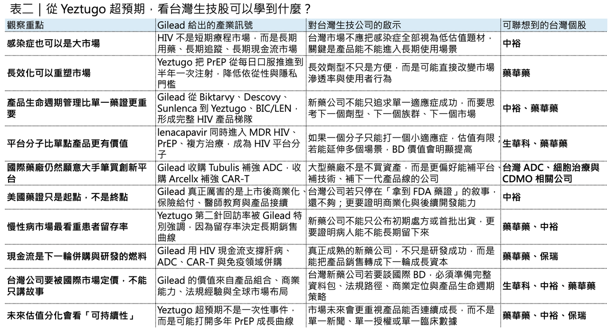

【Gilead 的 HIV 王朝沒有老去：Yeztugo 超預期，正在把 PrEP 推進「半年打一針」時代】
💉 Gilead 最新一季財報，表面看起來只是一份穩健的藥廠成績單。

2026 年第一季，Gilead 總營收年增 4% 至 69.6 億美元，產品銷售額約 69 億美元；其中 HIV 產品組合銷售額達 50.3 億美元，較去年同期成長 10%，仍然是公司最重要、最穩定、也最具戰略意義的現金流來源。
但這份財報真正讓市場重新定價的，不是 Biktarvy 仍然強，也不是 Gilead 的 HIV 基本盤還在，而是半年一次的長效 HIV PrEP 注射劑 Yeztugo（lenacapavir）開始跑出超預期的上市曲線。
Yeztugo 第一季銷售額達 1.66 億美元，季增約 72%。Gilead 首席商務長 Johanna Mercier 直接用「unprecedented launch trajectory」形容這款產品的開局，公司也把 Yeztugo 2026 年銷售預期從原本的 8 億美元上修到 10 億美元。
這句話背後的意義很大。
因為這代表 Yeztugo 很可能在上市第一個完整年度，就直接站上 blockbuster，也就是年銷售額 10 億美元以上的重磅藥物門檻。對 Gilead 來說，這不只是一個新藥上市成功的故事。更重要的是，HIV 市場正在從「每日服藥」進入「長效預防」的新階段，而 Gilead 又一次站在這個轉折點的最前面。

01｜Yeztugo 為什麼超預期？重點不是藥效，而是它解決了 PrEP 最大痛點
🧬 Yeztugo 的活性成分是 lenacapavir。
lenacapavir 是 first-in-class HIV capsid inhibitor，作用機制不同於傳統的 nucleoside reverse transcriptase inhibitors（NRTIs）或 integrase inhibitors。它不是只干擾 HIV 複製週期中的單一傳統酵素，而是透過影響 HIV capsid，也就是病毒衣殼的組裝與拆卸，進一步阻斷病毒生命週期。
這個機制很重要。
因為它讓 lenacapavir 和既有抗反轉錄病毒藥物之間沒有典型的交叉抗藥性，也讓它能夠在治療與預防兩個場景裡，都具備差異化定位。lenacapavir 最早不是以 PrEP 的姿態登場。2022 年，lenacapavir 先後在歐盟與美國獲准，用於治療經歷多種療法失敗、具有 multidrug-resistant HIV-1 的成人患者，商品名為 Sunlenca。這個定位原本偏向高度治療困難族群，是 HIV 治療市場裡相對小眾、但臨床需求很明確的一塊。
真正改變市場想像的，是 2025 年 6 月 18 日。
當天 FDA 核准 Yeztugo（lenacapavir）用於成人與體重至少 35 公斤青少年的 HIV pre-exposure prophylaxis（PrEP），也就是暴露前預防。這是 FDA 核准的第一個、也是目前唯一一個一年只需要兩次給藥的 HIV PrEP 方案。
它的臨床資料也非常強。
在 Phase 3 PURPOSE 1 與 PURPOSE 2 研究中，Yeztugo 展現接近完全保護的預防效果。Gilead 公布的資料指出，在兩項研究中，超過 99.9% 接受 Yeztugo 的受試者維持 HIV 陰性；PURPOSE 1 中 Yeztugo 組 HIV 發生率為 0/100 person-years，PURPOSE 2 中則為 0.1/100 person-years，均顯著優於每日口服 FTC/TDF 對照組。
但如果只把 Yeztugo 看成一個「藥效很好的 PrEP」，其實還是低估了它。
PrEP 市場真正的痛點，從來不只是藥物本身有沒有效。真正的痛點是：人很難長期每天吃藥。
在臨床試驗裡，口服 PrEP 可以非常有效；但在真實世界裡，每日服藥會遇到非常多問題。有人忘記吃，有人生活不規律，有人擔心伴侶、家人、室友看到藥物後產生汙名或誤解，也有人因為工作、移動、經濟條件或醫療可近性，無法長期穩定使用。所以 HIV PrEP 市場真正需要的，不只是更強的分子，而是更好的使用模式。Yeztugo 的核心價值正在這裡，它把「每天吃一顆」變成「半年打一針」。這對某些高風險族群來說，不只是方便，而是可能決定他們是否願意開始 PrEP、是否能夠持續 PrEP、是否能真正被保護的關鍵。

02｜從 Apretude 到 Yeztugo：HIV 預防市場正式進入長效競爭
⏳ 在 Yeztugo 之前，長效 PrEP 的代表產品是 ViiV Healthcare 的 Apretude（cabotegravir）。
Apretude 在 2021 年 12 月獲 FDA 核准，是全球第一個長效注射 HIV PrEP 方案。它的給藥方式是起始兩針間隔一個月，之後每兩個月注射一次。
Apretude 的出現，本身已經證明市場對長效 PrEP 有明確需求，但 Yeztugo 把競爭規則再往前推了一步。Apretude 是每兩個月一次，Yeztugo 是每六個月一次。從一年六次，變成一年兩次。
這個差異看起來只是給藥頻率，但在真實世界裡，它可能是產品商業化的分水嶺。
因為 PrEP 不是癌症藥，也不是罕見病藥。它面對的是健康或尚未感染 HIV 的高風險人群。這類產品的商業化邏輯，不只看療效，也看便利性、隱私性、醫療接觸頻率、保險給付、診所覆蓋率與患者心理門檻。
每日口服 PrEP 的問題，是使用者必須每天提醒自己「我正在暴露於風險」，每兩個月注射一次的問題，是仍然需要一年多次回診，半年一次注射則把醫療接觸頻率壓到非常低，這會改變 PrEP 的市場滲透方式。
Gilead 管理層在財報電話會議中提到，Yeztugo 不只是從既有口服 PrEP 或 Apretude 使用者中轉換患者，也正在帶動「初治處方」增加，尤其是在美國南部、鄉村地區等 PrEP 滲透率相對不足的市場。這個訊號很重要，因為它代表 Yeztugo 不是單純搶存量市場，而是在打開原本不願意或無法穩定使用 PrEP 的增量市場。
這也是為什麼 Yeztugo 的 1.66 億美元季度銷售額，不能只用一般新藥上市第一季來看。
它反映的是一個市場結構正在改變，PrEP 過去是「知道有效，但難以長期執行」，Yeztugo 的出現，則讓 PrEP 從藥理問題，變成行為醫學、公共衛生與商業通路共同驅動的市場。
03｜Yeztugo 不是單點爆發，而是 Gilead HIV 版圖的延伸
🌍 Gilead 不是突然靠 Yeztugo 翻紅。
更準確地說，Yeztugo 是建立在 Gilead 三十多年 HIV 產品與市場能力之上的下一個階段。
Gilead 從 1987 年成立以來，就深耕 nucleoside / nucleotide chemistry。2001 年，tenofovir disoproxil fumarate 的成功，讓 Gilead 真正打開 HIV 市場。此後 Gilead 持續透過單方、複方、固定劑量組合與長期療法，逐步建立 HIV 領域的全球領導地位。
到今天，Gilead 的 HIV 產品組合幾乎已經是產業標竿。
2026 年第一季，HIV 產品組合銷售額達 50.3 億美元，佔公司總營收約七成。這代表 Gilead 仍然是一家高度 HIV 驅動的公司，而不是單純多元化大型藥廠。在預防端，除了 Yeztugo，Descovy（emtricitabine/tenofovir alafenamide）仍然很強。2026 年第一季，Descovy 銷售額達 8.07 億美元，較去年同期成長 38%。2025 年全年，Descovy 銷售額成長 31% 至 28 億美元，這個數字其實很值得玩味。因為照理說，Yeztugo 上市後可能會分流部分 Descovy 使用者。但 Descovy 仍然大幅成長，表示美國 PrEP 市場不是單純產品互相替代，而是整體市場還在擴張。
這對 Gilead 來說非常有利。
因為它不是在用 Yeztugo 打自己的 Descovy，而是在用不同產品覆蓋不同需求，每日口服藥物適合已經習慣規律服藥、願意維持日常 PrEP 的族群。半年注射適合依從性差、生活不規律、需要更高隱私性，或不願每天被藥物提醒風險的人群。這是一個典型的產品組合分層策略。當市場還在擴大時，內部 cannibalization 不是最大問題；真正重要的是，Gilead 能不能用不同劑型、不同使用情境、不同價格與保險路徑，把 PrEP 市場做大。
目前看起來，這條路正在成立。
04｜Biktarvy 仍是現金流核心，但專利懸崖已經開始倒數
💰 如果 Yeztugo 是 Gilead HIV 版圖的新成長曲線，那 Biktarvy（bictegravir/emtricitabine/tenofovir alafenamide）就是現在的現金流引擎。Biktarvy 仍然是全球最重要的 HIV 治療藥物之一。2025 年，Biktarvy 全年銷售額達 143 億美元，年增 7%。2026 年第一季，Biktarvy 銷售額達 34 億美元，同樣年增 7%。
這種規模非常驚人。
許多 biotech 公司一輩子都在追求一個年銷售額 10 億美元的產品，但 Biktarvy 單季就是 34 億美元。它不是一般意義上的 blockbuster，而是 Gilead HIV 事業的主幹產品。不過，Biktarvy 也有一個必須面對的現實：專利週期終究會往前走。Gilead 預期 Biktarvy 仍可維持標準療法地位到 2030 年代中期，但對一家依賴 HIV 現金流的公司來說，不能等到專利懸崖真的逼近才準備下一代產品。
所以 Gilead 已經開始布下一個重要棋子：BIC/LEN（bictegravir/lenacapavir）。
2026 年 4 月，FDA 接受 Gilead 提交的 BIC/LEN 新藥申請，並授予 priority review，PDUFA 目標日期為 2026 年 8 月 27 日。BIC/LEN 是每日一次的單錠複方療法，目標族群是病毒量已被控制、但目前療法較複雜的 HIV 成人患者。BIC/LEN 的戰略意義，不只是多一個 HIV 新產品。它其實是 Gilead 在 Biktarvy 專利週期後，試圖維持 HIV 治療市場主導權的重要過渡工具。BIC/LEN 保留 bictegravir 這個高抗藥屏障的 integrase inhibitor，再加入 lenacapavir 這個 first-in-class capsid inhibitor。相較於 Biktarvy，它去除了 emtricitabine 與 tenofovir alafenamide，理論上可能減少部分長期使用時對腎臟、骨骼與代謝相關疑慮的討論空間。
當然，這不代表 BIC/LEN 一定會完全取代 Biktarvy。
更合理的理解是，BIC/LEN 會先瞄準需要簡化療法的族群，尤其是目前每日需要服用多顆藥物、或因共病與長期用藥負擔而希望切換方案的患者。它真正的商業價值，是讓 Gilead 在「換藥市場」中仍然掌握主導權。如果患者終究要從既有療法轉換，Gilead 當然希望他們從 Gilead 的舊產品，轉到 Gilead 的新產品，而不是流向 ViiV、Merck 或其他競爭者。
這就是 HIV 大藥廠最強的地方。
它不是只做一個藥，而是管理整個患者生命週期。從預防，到初治，到換藥，到多重抗藥性治療，再到長效療法，Gilead 正在把 lenacapavir 變成下一個 HIV 平台分子。
05｜肝病有亮點，腫瘤仍在補課：Gilead 多元化還沒有完全成功
🧪 雖然 HIV 仍然是 Gilead 的根基，但公司多年來一直試圖降低對 HIV 的依賴。
這也是為什麼肝病、腫瘤、細胞治療、ADC 與免疫領域，成為 Gilead 近年反覆投入的方向。
2026 年第一季，Gilead 肝病產品組合銷售額為 7.67 億美元，較去年同期成長 1%。表面上成長幅度不大，但 Livdelzi（seladelpar）是其中明顯亮點。
Livdelzi 是用於 primary biliary cholangitis（PBC）的藥物，最早由 CymaBay Therapeutics 研發。Gilead 在 2024 年以約 43 億美元收購 CymaBay，把 seladelpar 納入旗下；2024 年 8 月，Livdelzi 獲 FDA 加速核准上市。2026 年第一季，Livdelzi 銷售額年增 230% 至 1.33 億美元。
這個成長一方面來自產品本身的需求，另一方面也受惠於競爭環境變化。
Intercept 的 Ocaliva 在部分市場與適應症上受到監管壓力後，PBC 治療市場出現轉換機會，Livdelzi 成為受益者之一。不過 Livdelzi 第一季銷售額較上一季下滑，意味著前期轉換紅利可能已經開始消化，後續要看的不是一次性切換潮，而是真實世界中的患者留存與醫師處方習慣能否穩定建立。
腫瘤方面，Trodelvy（sacituzumab govitecan-hziy）仍然是 Gilead 最重要的實體瘤資產。
2026 年第一季，Trodelvy 銷售額達 4.02 億美元，較去年同期成長 37%。這個成長不差，顯示 Trodelvy 在乳癌等適應症中仍有商業動能。
但 Gilead 的腫瘤故事，還不能只靠 Trodelvy 撐住。
這也是為什麼 Gilead 在 2026 年 4 月宣布以 31.5 億美元 upfront，加上最高 18.5 億美元里程碑付款，收購德國 ADC 公司 Tubulis GmbH。這筆交易讓 Gilead 取得 TUB-040、TUB-030 等 ADC 資產與下一代 ADC 平台，強化其 oncology pipeline。
ADC 是近年全球腫瘤藥物開發最熱的方向之一。
AstraZeneca / Daiichi Sankyo 的 Enhertu（trastuzumab deruxtecan）已經重新定義 HER2 ADC 的天花板；Merck、BMS、Pfizer、Johnson & Johnson 也都在不同 ADC 標的與 payload 平台上積極布局。Gilead 收購 Tubulis，其實是在承認一件事：只靠內部 oncology 研發速度，可能不夠快。
它需要用併購補足平台能力，相比之下，細胞治療業務仍然承壓。
2026 年第一季，Yescarta（axicabtagene ciloleucel）與 Tecartus（brexucabtagene autoleucel）合計銷售額 4.07 億美元，較去年同期下降 12%。Gilead 將原因歸於同類與跨類競爭壓力。
這反映 CAR-T 市場正在進入更成熟、也更擁擠的階段。
早期 CAR-T 的故事是「革命性療效」，但現在市場更在意適應症擴張、治療線前移、製造時間、安全性管理、社區醫院滲透率，以及與雙特異性抗體等新療法的競爭。為了補強細胞治療管線，Gilead 在 2026 年 2 月完成對合作夥伴 Arcellx 的收購，交易金額約 78 億美元，取得多發性骨髓瘤 CAR-T 候選產品 anito-cel 的完整控制權。這筆交易也與 Tubulis、Ouro Medicines 等併購一起，造成 Gilead 2026 年財測出現大額 acquired IPR&D 費用，導致公司雖然上修銷售指引，卻下修全年獲利展望。
所以 Gilead 現在的狀態很清楚。
💉 HIV 很穩，PrEP 有新爆點。
💉 肝病有產品開始放量。
💉 腫瘤靠 Trodelvy 撐住現金流，但仍需要 ADC 與 CAR-T 併購補強長線故事。
💉 細胞治療還在承受競爭壓力。
這不是一家「單純財報漂亮」的公司，而是一家正在用 HIV 現金流，繼續為下一階段多元化買時間的公司。
06｜Gilead 這一季真正告訴市場的是：HIV 不是老市場，而是長效化後的新市場
📈 很多人對 HIV 市場有一個誤解，覺得這是一個成熟到不能再成熟的市場，這個理解只對一半。
如果只看傳統治療市場，HIV 確實已經高度成熟。標準療法清楚，患者長期用藥，競爭格局穩定，產品生命週期相對可預測。但如果從預防、長效化、依從性、公共衛生覆蓋率與全球市場滲透率來看，HIV 其實還有很大的重塑空間。Yeztugo 的價值就在於，它不是把 HIV 治療再改良一點點，而是把 PrEP 這個市場從「有效但難以持續」推向「更容易持續」。
這是一個非常大的商業差異。
💉 過去 PrEP 的市場擴張，受限於每日服藥與醫療可近性。
💉 現在長效 PrEP 開始改變使用門檻。
💉 未來如果一年一次、甚至自我注射形式的長效 PrEP 進一步出現，HIV 預防市場還可能被重新打開一次。
這也是為什麼 Gilead 對 Yeztugo 的語氣如此積極，它不是只看到 2026 年 10 億美元銷售額，而是看到一條可能延續多年的新成長曲線。更重要的是，Yeztugo 也讓 lenacapavir 這個分子從「多重抗藥性 HIV 治療藥」變成「HIV 預防平台分子」，再進一步延伸到 BIC/LEN 治療組合。一個分子，同時進入治療、預防、換藥與長效化多個場景，這才是大型藥廠真正想要的資產，不是單一產品，而是平台化生命週期管理。
07｜這和台灣生技股有什麼關係？
🔎 對台灣投資人來說，Gilead 的 HIV 財報不只是美股故事。
感染症不是沒有大藥。
台灣市場過去常常對感染症新藥給比較低的本益比或比較低的想像空間，原因是投資人容易把感染症和一次性療程、抗生素、COVID 波動連在一起。但 HIV 完全不同。HIV 是慢性病市場，治療週期長，患者留存高，產品組合可以持續升級。當治療、預防與長效化連在一起，它就不是短期需求市場，而是長期現金流市場。
這點對中裕（4147）特別有參考意義。
中裕的 Trogarzo（ibalizumab-uiyk）是台灣少數真正走過 FDA BLA、並獲美國核准上市的 HIV 生物藥。Trogarzo 的定位是 heavily treatment-experienced、multidrug-resistant HIV-1 成人患者，屬於高度治療困難族群，市場規模當然無法和 Yeztugo 這種 PrEP 大市場相比；但它代表台灣公司確實曾經在 HIV 領域做出 first-in-class、並通過美國 FDA 的案例。
換句話說，Gilead 的 Yeztugo 不是直接對中裕利多或利空，而是提醒市場：HIV 產業的價值不只在「有沒有藥證」，而在產品定位是否能進入大人群、能否長效化、能否形成產品生命週期管理。
中裕未來如果要重新打開估值，不只是要談 Trogarzo 的既有銷售，而是要讓市場看到它在 HIV 長效抗體、ADC 或下一代平台上的戰略延伸。
【結語｜Yeztugo 超預期，不只是 Gilead 的勝利，而是 HIV 市場規則改變】
✨ Gilead 這一季財報，表面上是 HIV 產品組合繼續成長，Yeztugo 上市超預期，全年銷售預期上修。但更深一層看，這其實是一個產業訊號：HIV 市場沒有老去。
它正在長效化、預防化、平台化。
Yeztugo 的成功證明，PrEP 市場真正的天花板不只來自藥效，而是來自能不能讓更多人願意開始、願意持續、願意長期被保護。Biktarvy 則證明，一個強大的 HIV 治療產品可以成為大型藥廠十年以上的現金流核心。BIC/LEN 代表 Gilead 正在為 Biktarvy 之後的 HIV 治療週期提前布局。Livdelzi、Trodelvy、Tubulis、Arcellx 則說明 Gilead 很清楚，單靠 HIV 還不夠，它必須用現在的 HIV 現金流，去買下一個十年的 oncology、liver disease 與 cell therapy 故事。
Gilead 的 HIV 王朝沒有老去，Yeztugo 只是讓市場重新看見，它還有能力往下一個時代推進。
參考資料：
[0]:各公司官網＆公開資料
[1]:
Gilead Sciences, Inc. - Gilead Sciences Announces First Quarter Financial Results
Product Sales Excluding Veklury Increased 8% Year-Over-Year to $6.8 billion Biktarvy Sales Increased 7% Year-Over-Year to $3.4 billion Gilead Sciences, Inc. (Nasdaq: GILD) announced today its results of operations for the first quarter 2026. “Gilead teams
investors.gilead.com
[2]:
Gilead says long-acting PrEP Yeztugo in line for $1B in '26 sales
The company raised its previous guidance of $800 million in revenues from the long-acting injectable.
www.fiercepharma.com
[3]:
Taiwan Pharmaceutical Alliance
https://tpatw.org.tw/en/event_page.php
tpatw.org.tw
[4]:
Yeztugo® (Lenacapavir) Is Now the First and Only FDA Approved HIV Prevention Option Offering 6 Months of Protection
Yeztugo® (Lenacapavir) Is Now the First and Only FDA Approved HIV Prevention Option Offering 6 Months of Protection
www.gilead.com
[5]:
FDA Approves First Injectable Treatment for HIV Pre-Exposure Prevention | FDA
Today, the FDA approved Apretude (cabotegravir extended-release injectable suspension) for use in at-risk adults and adolescents weighing at least 35 kilograms (77 pounds) for pre-exposure prophylaxis (PrEP) to reduce the risk of sexually acquired HIV.
www.fda.gov